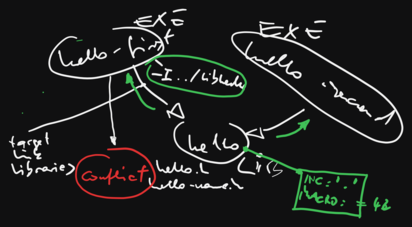
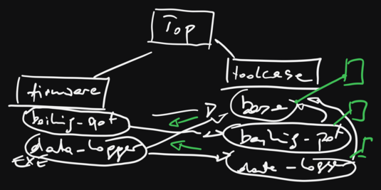
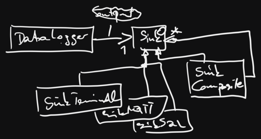
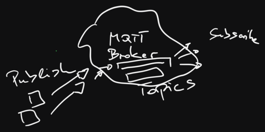
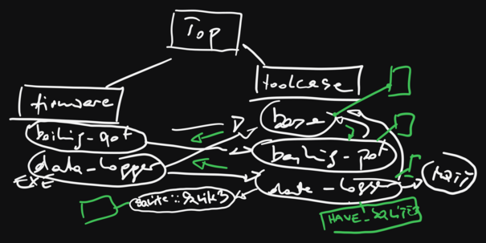

CMake: Advanced Topics (2024-07-01)¶
Day 1¶
Basics¶
From CMake: Introduction
Cross Development¶
CMake: Cross Build (including a link to a working toolchain file)
Day 2¶
Exercise: Build It!¶
Add CMake build to existing source code in https://github.com/jfasch/2024-07-01/tree/main/exercises/straightforward
Dependencies, Dependencies, Properties, …¶
The CMake Language¶
From The Language
Day 3¶
Morning Awakening¶
External Dependencies¶
From CMake: Advanced Topics …
Screenplay: Making SQLite3 Optional (target_compile_definitions())
Screenplay: Integrating libmosquitto (MQTT - Handwritten Find-Module)
Dependencies in our project |
||
|  |  |  |
Code Generators¶
- Wrong way to generate code: generate at CMake run time
⟶ triggers unnecessary rebuilds everytime a
CMakeLists.txtis changed.
# -----------------------------
# THIS IS NOT THE WAY TO DO IT!
# -----------------------------
execute_process(
COMMAND ${CMAKE_CURRENT_SOURCE_DIR}/config-generator.py
${CMAKE_CURRENT_SOURCE_DIR}/2024-07-03.conf
${CMAKE_CURRENT_BINARY_DIR}/2024-07-03-do-not-use.cpp
)
add_executable(
data-logger-deeply-embedded-2024-07-03-do-not-use
data-logger-deeply-embedded.cpp
${CMAKE_CURRENT_BINARY_DIR}/2024-07-03-do-not-use.cpp
)
target_include_directories(data-logger-deeply-embedded-2024-07-03-do-not-use PRIVATE ${CMAKE_CURRENT_SOURCE_DIR})
target_link_libraries(data-logger-deeply-embedded-2024-07-03-do-not-use data-logger-lib base-lib)
See https://github.com/jfasch/2024-07-01/blob/main/exercises/1/firmware/CMakeLists.txt